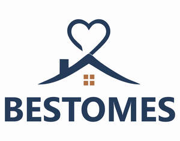

Trade Mark Journal No.2025/047 21 November 2025
UK00004277391 14 October 2025 (16,20,24,35)

- Class 16
- Food waste bags of biodegradable plastic for household use; Plastic bags for packing; Garbage bags of plastic; Paper bags; Plastic bags for household use; Plastic bags for securing valuables.
- Class 20
- Mattresses; floating inflatable mattresses (airbeds); beds; bedsteads; headboards; bedding (other than bed clothing), bedding for cots (other than bed linen); cots; pillows (not for surgical or curative purposes), cushions and bolsters (upholstery); fittings for upholstery, cushions and bolsters; settees convertible into beds; divans; couches; bedroom furniture; mirrors; blinds; furnishings, accessories and decorations being non-metallic bed fittings and household articles made of plastic for decoration purposes; plastic models and ornaments; parts and fittings for all the aforesaid goods.
- Class 24
- Household textile articles; textiles included in this class; textiles and textile goods; bed covers; bedding; bed linen; bed sheets; duvets and duvet covers; covers for pillows, cushions and duvets; curtains; upholstery fabrics; all kinds of towels.
- Class 35
- Advertising; Business management; Business administration; Office functions; Online retail and wholesale services relating to Mattresses and mattress protectors, Bed linens, including sheets, duvet covers, pillowcases, and bed skirts, Cushions and covers for cushions, Household textile articles, Textiles and textile goods, including bed covers, bedding, duvets, curtains, and upholstery fabrics, towels, Bags, specifically food waste bags of biodegradable plastic for household use, plastic bags for packing, garbage bags of plastic, paper bags, plastic bags for household use, and plastic bags for securing valuables.
Buggaz Ltd